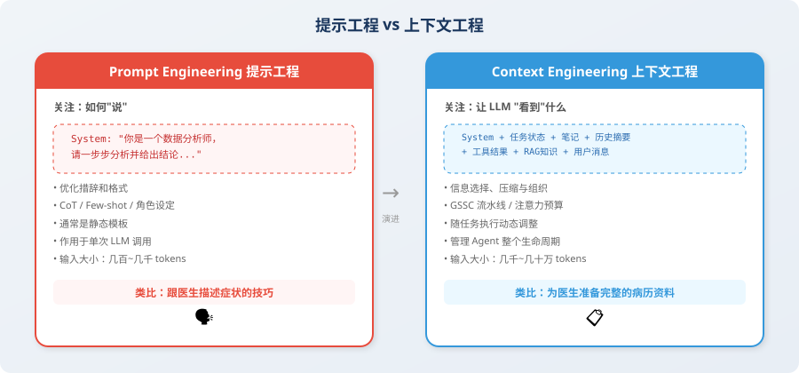

从提示工程到上下文工程
📖 "Prompt Engineering 是对 LLM 说什么，Context Engineering 是让 LLM 看到什么。"
提示工程的局限
你可能已经花了大量时间学习如何写好 Prompt——用 CoT 引导推理 [1]、用 Few-shot 提供示例 [2]、用角色设定约束行为。这些技巧在简单的"一问一答"场景中非常有效。
但当你开始构建 Agent 时，会发现 Prompt Engineering 只能解决一部分问题：
# 一个典型的 Agent 上下文包含远不止 prompt
agent_context = {
# ① System Prompt（提示工程关注的部分）
"system_prompt": "你是一个数据分析专家...",
# ② 对话历史（可能长达数十轮）
"conversation_history": [...], # 20 轮 × 每轮 500 tokens = 10,000 tokens
# ③ 工具调用结果（可能非常冗长）
"tool_results": [...], # SQL 查询结果、API 返回值
# ④ 检索到的知识（RAG 结果）
"retrieved_documents": [...], # 相关文档片段
# ⑤ 当前任务状态
"task_state": {...}, # 已完成的步骤、中间结果
# ⑥ 环境信息
"environment": {...}, # 时间、用户偏好、系统状态
}
# 问题：这些信息加在一起可能超过 100,000 tokens！
# Prompt Engineering 无法告诉你：哪些该放进去，哪些该丢弃
上下文工程的定义
上下文工程（Context Engineering） 是一门系统性的工程学科，研究如何为 LLM 的每次推理调用构建最优的信息输入 [3]。
它回答的核心问题是：
在有限的上下文窗口中，如何确保 LLM 在需要做决策的那一刻，恰好看到了做出正确决策所需的全部信息？

关键区别
| 维度 | 提示工程 | 上下文工程 |
|---|---|---|
| 关注点 | 怎么"说"（措辞、格式、技巧） | 让 LLM "看到"什么（信息选择与组织） |
| 作用范围 | 单次调用 | 整个 Agent 生命周期 |
| 核心挑战 | 让 LLM 理解意图 | 在有限窗口中放入最相关的信息 |
| 静态 vs 动态 | 通常是静态模板 | 随任务执行动态调整 |
| 典型输入大小 | 几百~几千 tokens | 几千~几十万 tokens |
| 类比 | 给医生描述症状的技巧 | 为医生准备完整的病历、检查报告、用药史 |
上下文的六大信息源
一个 Agent 的上下文通常由以下六类信息组合而成：
from dataclasses import dataclass, field
from typing import Optional
@dataclass
class AgentContext:
"""Agent 上下文的六大信息源"""
# 1. 系统指令：定义 Agent 的角色、能力和行为规范
system_instructions: str = ""
# 2. 用户输入：当前轮的用户请求
user_message: str = ""
# 3. 对话记忆：历史对话的关键信息
conversation_memory: list[dict] = field(default_factory=list)
# 4. 工具状态：工具调用的历史结果
tool_history: list[dict] = field(default_factory=list)
# 5. 检索知识：从外部知识库检索到的相关文档
retrieved_knowledge: list[str] = field(default_factory=list)
# 6. 任务状态：当前任务的执行进度和中间结果
task_state: Optional[dict] = None
def total_tokens(self) -> int:
"""估算当前上下文的总 token 数"""
# 简化估算：1 token ≈ 4 个英文字符 ≈ 1.5 个中文字符
total_text = (
self.system_instructions
+ self.user_message
+ str(self.conversation_memory)
+ str(self.tool_history)
+ "".join(self.retrieved_knowledge)
+ str(self.task_state)
)
return len(total_text) // 4 # 粗略估算
def is_within_budget(self, max_tokens: int = 128000) -> bool:
"""检查是否在上下文窗口预算内"""
return self.total_tokens() < max_tokens
# 示例：一个典型的 Agent 调用
context = AgentContext(
system_instructions="你是一个资深数据分析师...", # ~500 tokens
user_message="分析上个月的用户留存率变化趋势", # ~50 tokens
conversation_memory=[ # ~3,000 tokens
{"role": "user", "content": "先看看整体数据..."},
{"role": "assistant", "content": "好的，我来查询..."},
# ... 更多历史
],
tool_history=[ # ~5,000 tokens
{"tool": "sql_query", "result": "...大量查询结果..."},
],
retrieved_knowledge=[ # ~2,000 tokens
"留存率分析最佳实践：...",
"公司上月运营报告摘要：...",
],
task_state={ # ~500 tokens
"completed_steps": ["数据查询", "基础统计"],
"current_step": "趋势分析",
"intermediate_results": {"day7_retention": 0.42},
},
)
print(f"预估上下文大小: {context.total_tokens()} tokens")
print(f"在 128K 窗口内: {context.is_within_budget()}")
上下文工程的三大原则
原则一：相关性优先
不是把所有信息都塞进上下文，而是只放入与当前决策最相关的信息。
# ❌ 错误做法：把所有对话历史都放进去
messages = full_conversation_history # 可能几万 tokens
# ✅ 正确做法：只保留相关的历史
def select_relevant_history(
history: list[dict],
current_task: str,
max_turns: int = 10
) -> list[dict]:
"""选择与当前任务最相关的历史"""
# 策略1：保留最近的 N 轮
recent = history[-max_turns:]
# 策略2：从更早的历史中挑选与当前任务相关的轮次
# （可以用 embedding 相似度来判断相关性）
return recent
原则二：结构化呈现
相同的信息，不同的组织方式会显著影响 LLM 的理解效果。
# ❌ 杂乱的上下文
messy_context = """
查询结果：用户数1000，留存率42%，上月45%，下降了3%，
另外DAU也在下降，从5000降到4500，MAU基本持平...
"""
# ✅ 结构化的上下文
structured_context = """
## 当前任务状态
### 已完成步骤
1. ✅ 数据查询：获取了 2025年2月 的用户数据
2. ✅ 基础统计：完成关键指标计算
### 关键数据摘要
| 指标 | 本月 | 上月 | 变化 |
|------|------|------|------|
| 7日留存率 | 42% | 45% | ↓ 3% |
| DAU | 4,500 | 5,000 | ↓ 10% |
| MAU | 15,000 | 15,200 | ↓ 1.3% |
### 当前步骤
正在进行：趋势分析（需要识别下降原因）
"""
原则三：动态裁剪
上下文的内容应该随着任务进展动态调整，而不是一成不变。
class DynamicContextManager:
"""动态上下文管理器"""
def __init__(self, max_tokens: int = 100000):
self.max_tokens = max_tokens
self.priority_levels = {
"system": 1, # 最高优先级，永远保留
"current_task": 2, # 当前任务信息
"recent_tool": 3, # 最近的工具结果
"history": 4, # 对话历史
"knowledge": 5, # 检索知识
}
def build_context(self, sources: dict) -> list[dict]:
"""按优先级构建上下文，确保不超预算"""
context = []
remaining_tokens = self.max_tokens
# 按优先级从高到低填充
for priority_name in sorted(
self.priority_levels,
key=self.priority_levels.get
):
if priority_name in sources:
content = sources[priority_name]
tokens = estimate_tokens(content)
if tokens <= remaining_tokens:
context.append(content)
remaining_tokens -= tokens
else:
# 超出预算，需要裁剪
truncated = truncate_to_fit(content, remaining_tokens)
context.append(truncated)
break
return context
本节小结
| 概念 | 说明 |
|---|---|
| 上下文工程 | 系统性地为 LLM 构建最优信息输入的工程学科 |
| 与提示工程的关系 | 提示工程是上下文工程的子集，后者范围更广 |
| 六大信息源 | 系统指令、用户输入、对话记忆、工具状态、检索知识、任务状态 |
| 三大原则 | 相关性优先、结构化呈现、动态裁剪 |
🤔 思考练习
- 你使用过的 Agent 产品中，有没有遇到过"聊着聊着就忘了之前说过什么"的情况？用上下文工程的视角分析原因。
- 如果一个 Agent 的上下文窗口只有 8K tokens，你会如何分配这个预算？
参考文献
[1] WEI J, WANG X, SCHUURMANS D, et al. Chain-of-thought prompting elicits reasoning in large language models[C]//NeurIPS. 2022.
[2] BROWN T B, MANN B, RYDER N, et al. Language models are few-shot learners[C]//NeurIPS. 2020.
[3] ANTHROPIC. Building effective agents[EB/OL]. 2024. https://www.anthropic.com/engineering/building-effective-agents.